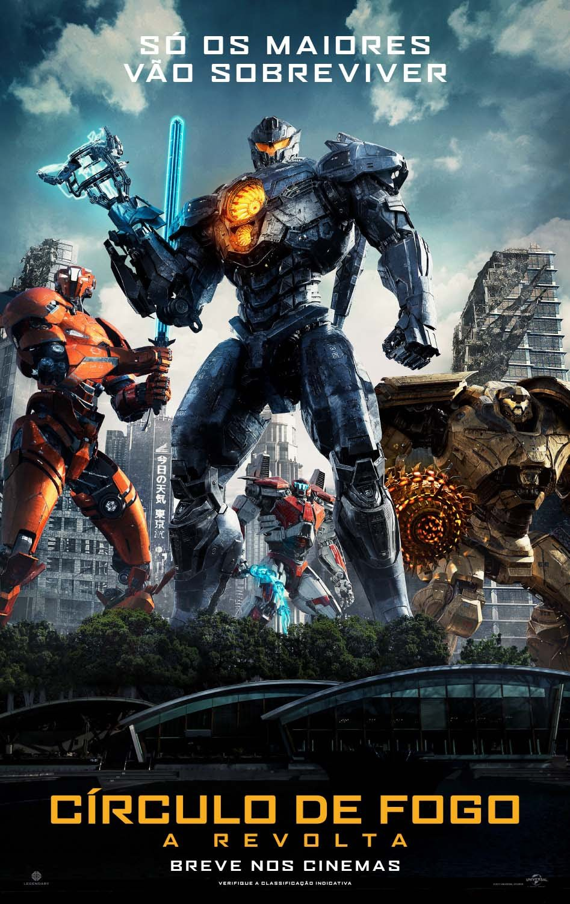

O filme Circulo de Fogo mais conhecido como "Pacific Rim", foi lançado em 9 de agosto de 2013(No Brasil), com Guillermo del toro como diretor.
O filme conta sobre criaturas monstruosas conhecidas como Kaiju que começam a emergir do mar. Para combatê-las, a humanidade desenvolve uma série de robôs gigantescos, os Jaegers. Cada um é controlado por duas pessoas por meio de uma conexão neural. Entretanto, mesmo os Jaegers se mostram insuficientes para derrotar os Kaiju. Diante deste cenário, a última esperança é um velho robô, que passa a ser comandado por um antigo piloto e uma pessoa em treinamento.
Pacific Rim - Uprising

O filme Circulo de Fogo - A revolta, mais conhecido como "Pacific Rim - Uprising" foi lançado em 22 de março de 2018(No Brasil), com Steven S.DeKnight como diretor.
Este novo filme conta sobre o piloto rebelde Jake Pentecost e sua irmã distante lideram uma nova geração de guerreiros corajosos contra os novos Kaijus que tem saído cada vez mais fortes do portal do outro mundo.